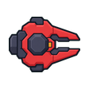
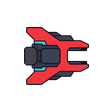
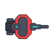
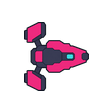
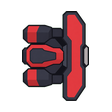
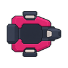

이번에 결정할 것
현재 등장 여부, 원격 브랜치의 채택 범위, 9개 패밀리, 패밀리별 활성 트레잇 2개, 팩 편성, 삭제·이관 순서.
Ordinary enemy review · 2026-08-20
원격 브랜치는 이동을 단순하게 만들지만, 모든 적을 플레이어에게 바로 달려들게 한다. 이 보고서는 그 브랜치를 그대로 합치지 않고 9개 패밀리 · 패밀리별 활성 트레잇 2개 · 모든 적의 팩 소속 · 원거리 팩의 방어형 의무 편성으로 다시 조립하는 기준을 제안한다.
Scope
현재 등장 여부, 원격 브랜치의 채택 범위, 9개 패밀리, 패밀리별 활성 트레잇 2개, 팩 편성, 삭제·이관 순서.
적 코드 삭제, 브랜치 병합, 새 적 이미지 제작, 티어별 최종 아트, 맵 보석 경쟁, 기지 방어 확장.
2트레잇 표, Coordinator의 두 번째 트레잇, 52/60/68 크기 후보, 고정 설치물 4종의 완전 삭제 여부.
Remote branch
| 브랜치 변경 | 판단 | 새 구조에서의 처리 |
|---|---|---|
| 이동 목표를 플레이어의 현재 위치로 변경 | 채택 | 개별 적이 아니라 팩의 목표·진형 앵커가 현재 위치를 기준으로 삼는다. |
| 이동 예측 제거 | 채택 | 이동은 단순화하되, 공격 조준의 예측은 유지한다. |
| 모든 이동형을 직접 추격으로 통합 | 거절 | 원거리·지원·방어형은 팩 슬롯과 공격 거리 때문에 서로 다른 위치 규칙이 필요하다. |
| 거리대·후퇴·궤도·호위·지원 위치 제거 | 거절 | 개별 거리대 난립은 줄이되, 팩 전열·후열·지원 슬롯은 남긴다. |
| 직선 경로가 막힐 때만 우회 안내 | 채택 | 팩 앵커 이동에 적용한다. |
| 로컬 분리·속도 완화·속도 상한 유지 | 채택 | 멤버 충돌과 떨림을 줄이는 기존 안전장치로 유지한다. |
| 직접 추격을 제품 결정 문서로 확정 | 거절 | 팩 구조가 승인된 뒤 제품 문서를 새 결정으로 작성한다. |
Capture native rendered evidence 단계가 실패했고 이후 Web 검증은 실행되지 않았다.Current inventory
| 구분 | 수 | 정확한 ID | 처리 원칙 |
|---|---|---|---|
| 일반 웨이브 | 14 | melee_01, ranged_01, area_01, lane_01, shield_01, sweep_01, beam_01, growth_01, gap_01, pulse_01, compression_01, reflect_01, resonance_01, overload_01 |
가족·티어·트레잇으로 이관 |
| 보스 add만 | 4 | edge_01, pull_01, range_01, support_01 |
현재 플레이에는 있으나 일반 웨이브에는 없음 |
| 보스 소환 설치물 | 1 | fixed_beam_01 |
Stage 3 보스 패턴으로 분리 검토 |
| 정상 캠페인 미도달 | 7 | support_02, support_03, melee_02, fixed_ranged_01, fixed_area_01, fixed_ranged_02, fixed_support_01 |
행동 이관 후 ID·Guidebook·아트 연결 제거 |
compression, reflect, resonance, overload는 앞선 몸체·행동·PNG를 재사용하고 일부 예외만 더한다. 가족 트레잇으로 옮길 수 있는 중복 ID다.
support_02는 Defender, support_03은 Coordinator 시각 후보, melee_02는 몰아주기 로직의 재료가 될 수 있다.
고정 여부는 패밀리가 아니라 배치 방식이다. 정상 플레이에 없는 고정 4종은 일반 적 카탈로그에서 빼되, 미래 확장으로 남길지는 별도 결정한다.
06 · Controller
ordinary_gap_01 · 이름보다 약한 제어Stage 7–9 일반 웨이브와 보스 add에 등장한다. 390–540 거리대를 유지하며 0.82초 준비 후 피해 9, 속도 440의 단발 Controller bolt를 쏜다. 현재 동작은 사실상 느린 Gunner에 가깝다.
ordinary_compression_01 · 실제 통로 제어Stage 9–12에 등장한다. Gap의 이동·몸체·PNG를 재사용하지만 일반 탄환 대신 화면을 지나는 압축 통로를 만든다. 현재 Controller의 핵심 행동으로 남길 가치가 있다.
09 · Coordinator
ordinary_coordinator_01 같은 적 ID, Blink, Invisible, Shrink, Like Rock, 팩 전체 몰아주기는 구현되어 있지 않다.
support_03은 자식을 3기까지 낳는 Carrier지만 정상 캠페인에 나오지 않는다. melee_02는 주변 사망으로 자신만 강화되며 역시 나오지 않는다.
VehicleCollectiveTacticRuntime은 팩의 리더·멤버·진형·단계를 관리한다. 화면에 보이는 적이 아니라 새 Coordinator의 기반 코드다.
짧고 큰 예고 뒤 팩 전체를 충돌 없는 위치로 재배치한다. 진형을 보존하며 플레이어·엄폐물·다른 적 안으로 이동할 수 없다.
같은 팩의 소환물이 아닌 멤버가 죽을 때 생존자를 회복하고 제한된 강화 스택을 준다. Coordinator가 죽으면 이후 스택 획득이 멈춘다.
| 후보 | 초기 처리 | 이유 |
|---|---|---|
| Blink | 활성 | 팩 단위 위치 변화가 분명하고, 큰 예고와 안전한 도착 규칙을 만들 수 있다. |
| 몰아주기 | 활성 | 팩의 사망 순서를 전략으로 바꾸며, 미도달 melee_02 로직을 이관할 수 있다. |
| Invisible | 미래 | 진짜 투명화는 적·탄선·피격 판독을 약하게 한다. 재검토 시에도 실루엣과 발동 예고는 남겨야 한다. |
| Shrink | 미래 | 작아진 외형과 기존 충돌 크기가 어긋나기 쉽고, 충돌까지 줄이면 별도 밸런스 변경이 된다. |
| Like Rock | Coordinator에서 제외 | 극단적 방어·감속은 Defender와 현재 Armored/Heavy의 역할을 반복한다. 필요하면 미래 Defender의 자세로 옮긴다. |
Pack contract
모든 스케줄 squad에 squad_id, 리더, 진형 슬롯, 진형 크기가 있다.
팩별 역할 보존, 모든 팩의 전술 상태, 원거리 팩의 Defender 의무 편성.
현행 스케줄과 전술 최소 인원을 활용해 기본 4–8기. 같은 팩을 한 단위로 예고·입장·취소한다.
팩 ID만으로 적 수·충돌·렌더 비용은 줄지 않는다. 공용 목표·진형·트레잇 타이머만 팩당 1회 계산할 수 있다.
| 불변 규칙 | 정의 | 실패 시 처리 |
|---|---|---|
| 전원 팩 소속 | 일반 적은 예고부터 사망까지 정확히 한 팩에 속한다. | 팩 ID 없는 일반 적 생성 거부. |
| 원거리 + Defender | Gunner·Artillery·장거리 Controller가 있는 팩에는 Defender가 최소 1기 있다. | 원거리만 먼저 만들지 않고 팩 전체를 지연·대체·취소. |
| 인원 수 보존 | Defender는 기존 filler 한 자리를 교체한다. 적 수와 위협 예산 위에 추가하지 않는다. | 예산에 맞는 다른 팩 청사진 사용. |
| 전열·후열 | Defender는 전방/측면, 원거리 적은 보호받는 후방 슬롯을 사용한다. | 진형이 깨지면 보호도 깨지고 각 유닛은 기본 행동으로 복귀. |
| 한 팩 한 트레잇 | 주 패밀리의 활성 트레잇 하나만 보인다. 필수 Defender는 기본 행동만 사용한다. | 두 번째 트레잇 요청은 거부하거나 다음 팩으로 미룬다. |
| 개체 판정 유지 | 체력·충돌·공격·피해·상태·렌더는 각 적이 계속 소유한다. | 팩 사망/피격 공유로 단순화하지 않는다. |
Nine families
아래 T1–T3 이미지는 현재 production PNG 하나를 세 크기로 반복한 비교다. 최종 티어 아트가 아니며, 새 이미지를 만들지 않고 크기 차이만 검토하기 위한 자리표시자다. 제안 공통 가시 반지름은 T1 52 / T2 60 / T3 68이다.
단순 접촉 압박. 방어·흡혈·중량을 얹지 않고, 숫자와 추격 리듬만 읽게 한다.
처치 시 더 작은 T1 둘로 갈라진다.
낮은 체력에서만 추격 속도가 오른다.
현재 씨앗: melee_01, pulse_01. 제외: Armored, Leech, Heavy.
큰 충각과 준비선, 돌진 뒤 취약 시간을 하나의 반응으로 묶는다.
더 오래 예고하고 더 세게 돌진한 뒤 더 크게 취약해진다.
첫 돌진 뒤 짧게 재조준해 한 번 더 돌진한다.
현재 씨앗: edge_01, pull_01, overload_01. 미래: Rebound, Dragline, Shockwave.
 T1 · 52T2 · 60T3 · 68
T1 · 52T2 · 60T3 · 68현재 area_01은 플레이어 근처에서 멈추고 1초 뒤 폭발하는 이동형 minelet이다. 이 행동을 패밀리 본체로 사용한다.
근처 Bomber를 순서대로 기폭한다.
처치된 외피가 잠시 남아 한 번 지연 폭발한다.
현재 씨앗: area_01. Cluster는 Artillery와 겹치므로 사용하지 않는다.

T1 · 52중·장거리 직접 사격. 모든 Gunner 팩에는 기본 Defender가 최소 1기 포함된다.
짧은 간격으로 3발을 한 묶음으로 쏜다.
긴 단일 위험선으로 뒤 공간까지 압박한다.
현재 씨앗: ranged_01, lane_01, range_01, beam_01. 미래: Spread, Tracking, Suppressor.

T1 · 52장거리 예측 포격과 지면 위험을 담당한다. 모든 Artillery 팩에는 기본 Defender가 최소 1기 포함된다.
주 착탄 뒤 작은 착탄이 여러 방향으로 갈라진다.
착탄 지역이 짧은 지속 위험으로 남는다.
현재 씨앗: growth_01의 포탄, sweep_01의 지연 지면 폭발. 미래: Heavy Shell, Seeker, Salvo.

T1 · 52피해량보다 공간 배치가 핵심이다. 장거리로 배치되는 Controller 팩에는 Defender가 필요하다.
움직이는 두 경계가 안전 폭을 줄인다.
예고된 방향을 따라 지면 위험이 순서대로 이동한다.
현재 씨앗: compression_01, sweep_01. gap_01 단발 탄환은 재설계 또는 Gunner 이관.

T1 · 52원거리 팩의 전열을 맡는다. 방패 면과 실제 차단 방향이 반드시 일치해야 한다.
인접 후열까지 덮는 넓은 정면 차단을 만든다.
정면 직사 탄을 제한적으로 되돌린다.
현재 씨앗: shield_01, reflect_01, 미도달 support_02. Armored와 Heavy의 정체성은 여기로 흡수하거나 삭제.

T1 · 52공격보다 회복과 유지가 핵심인 우선 표적이다. 혼자보다 다른 패밀리 팩의 후열에 배치한다.
한 대상에게 지속 회복을 보낸다.
주기적으로 주변 여러 적을 소량 회복한다.
현재 씨앗: 보스 add의 support_01, 미도달 fixed_support_01. 미래: Cleanse, Shield Charge, Sacrifice.
 T1 · 52T2 · 60T3 · 68
T1 · 52T2 · 60T3 · 68현재는 미구현이다. 단독 스폰하지 않고 특수 혼성 팩에 1기만 둔다. 이 적이 죽어도 생존자는 사라지지 않고 팩 트레잇만 더 이상 갱신되지 않는다.
팩 전체의 예고된 재배치.
같은 팩의 사망을 생존자의 제한된 회복·강화로 전환.
현재 씨앗: 미도달 support_03 PNG는 시각 자리표시자로만 사용. 실제 조정은 공용 collective runtime이 담당.

T1 · 52Delete after migration
| 현재 항목 | 현재 상태 | 목표 | 삭제 조건 |
|---|---|---|---|
support_02 | 미도달 | Defender escort 씨앗으로 이관 | 원거리 팩 Defender 불변식과 검증 완료 |
support_03 | 미도달 Carrier | Coordinator 시각·소환 아이디어만 선택 이관 | Coordinator 몸체 여부 결정 |
melee_02 | 미도달 개인 성장형 | 사망 스택을 팩의 몰아주기로 이관 | 팩 단위 회복·강화·상한·중복 방지 테스트 완료 |
fixed_ranged_01 | 미도달 포탑 | 삭제 또는 미래 설치물 카탈로그 | Guidebook·공격·렌더·fixture·PNG 연결 정리 |
fixed_area_01 정의 | 직접 미도달, 이름은 mobile mine 행동이 사용 | mobile mine 행동과 fixed 배치를 분리 | area_01이 fixed role 이름에 의존하지 않음 |
fixed_ranged_02 | 미도달 Interceptor | 삭제 또는 미래 설치물 카탈로그 | 요격 분기·검증·PNG 연결 정리 |
fixed_support_01 | 미도달 Generator | 수리 원리만 Sustainer에 필요하면 이관 | 회복·방벽 분기와 소비자 정리 |
compression_01 | 도달 중복 ID | Controller의 Compression 트레잇 | Stage 9–12·Guidebook·테스트 이관 |
reflect_01 | 도달 중복 ID | Defender의 Reflector 트레잇 | Stage 10–12·반사 테스트 이관 |
resonance_01 | 도달 중복 ID | 미래 Gunner 후보 또는 제거 | 활성 2트레잇 유지와 Stage 11–12 대체 |
overload_01 | 도달 중복 ID | Charger의 Overload 트레잇 | Stage 12·취약 판정 테스트 이관 |
armored / overclocked / heavy | 현재 전역 elite | 패밀리 전용 2트레잇으로 교체 | 선정·Guidebook·시각·통계 소비자 이관 |
Visual evidence
52/60/68은 공통 첫 실험값이다. 지금부터 9개 패밀리에 서로 다른 크기 곡선을 주면 시각·충돌·팩 간격 문제가 동시에 커진다. 먼저 공통 계단을 검증하고, Defender처럼 정말 체급 차이가 필요한 패밀리만 후속 보정한다.


visual_radius가 발사체 피격 반지름에도 연결된다. 몸이 커 보이게 하는 일, 탄이 맞는 범위, 접촉 충돌 범위는 각각 별도 계약으로 분리한 뒤 검토해야 한다. 112×112 PNG를 T3로 확대했을 때 선명도가 충분한지도 실제 16:9 전투 화면에서 확인한다.Implementation order
| 단계 | 변경 | 완료 증거 | 중단 조건 |
|---|---|---|---|
| 0 · 승인 | 2트레잇 표, Coordinator 두 트레잇, 크기, 고정 4종 처리 승인 | 활성 plan의 open decision 종료 | 가족 역할이나 삭제 범위가 계속 바뀜 |
| 1 · 데이터 계약 | family/tier/trait/pack schema와 시각·피격·충돌 반지름 분리 | 중복 trait, 2개 초과, 팩 없는 적을 검출하는 validator | 기존 행동의 소유자가 불명확함 |
| 2 · 첫 팩 | Gunner 2–3 + Defender 1 + filler로 4–8기 팩 구성 | 팩 단위 예고·입장·진형·해체, 원거리 고아 스폰 없음 | 인원·위협 예산이 늘어나거나 공격 예고가 가려짐 |
| 3 · 이동 이식 | 원격 브랜치의 현재 위치 목표·막힌 경로 우회·완화만 팩 앵커에 적용 | 원거리 후열 유지, Defender 전열 유지, 공격 예측 보존 | 모든 멤버가 다시 플레이어에게 겹쳐 달려듦 |
| 4 · Coordinator | Blink와 몰아주기만 구현 | 예고·안전 도착·스택 상한·소환 제외·Coordinator 사망 해제 테스트 | 투명화·축소·방어 자세가 초기 범위로 섞임 |
| 5 · ID 이관 | Compression·Reflect·Overload를 trait으로 이동하고 미도달 prototype 정리 | 12-cycle·Guidebook·한/영·semantic asset·fixture 검증 | 기존 플레이에 등장하는 ID를 대체 없이 삭제 |
| 6 · 시각 검증 | T1/T2/T3 실제 크기 비교 후 승인된 패밀리만 아트 제작 | 가족·티어·방향·트레잇을 전투 크기에서 판독 | 작은 조명·아이콘·외곽 glow로만 구분 |
| 7 · 성능 검증 | 같은 적 수·탄·효과·충돌·cadence로 전후 비교 | 정확한 focused/native/Web pass label | 팩 수를 줄여 통과하거나 깨끗한 baseline이 없음 |
ordinary_lane_01 계열 Gunner와 ordinary_shield_01 Defender를 한 팩으로 묶는다. 여기서 진형·스폰·공격 가독성·비용이 맞지 않으면 9개 패밀리 전체로 확장하지 않는다.Evidence
vehicle_enemy_archetypes.gd, vehicle_combat_stages.gd, vehicle_boss_phase_catalog.gd, vehicle_boss_patterns.gd, vehicle_spawn_allocator.gd, vehicle_encounter_runtime.gd, vehicle_collective_tactic_catalog.gd, vehicle_collective_tactic_runtime.gd, vehicle_enemy_movement_policy.gd, vehicle_enemy_specialist_runtime.gd, vehicle_elite_trait_catalog.gd, vehicle_attack_contract.gd, vehicle_actor_visual_catalog.gd, production asset manifest와 PNG.bd9f72f7, 공통 기준 4d6bb2dc.cardborne_enemy_family_trait_report_ko (1).html, cardborne_enemy_family_trait_report_ko.html, 사용자가 제공한 PNG 3개. 이 보고서는 두 문서의 고유 내용을 합치되 5개 트레잇 구조와 맵 확장을 채택하지 않았다.docs/design/VISUAL_SYSTEM.md SHA-256 2e5cf7e3f156629bcbe956da0e6cb30f6d3b608d9c20122ec5285fa1562aa006. 범용 스타일 시트 기대·관측 SHA-256 96ccf5d053e66dd3a102ccdf39daefd0b0c54b0e88d20428b7ba1c894f002889. 새 래스터 생성·편집·승격은 하지 않았다.
로컬 저장소에만 보관됩니다.